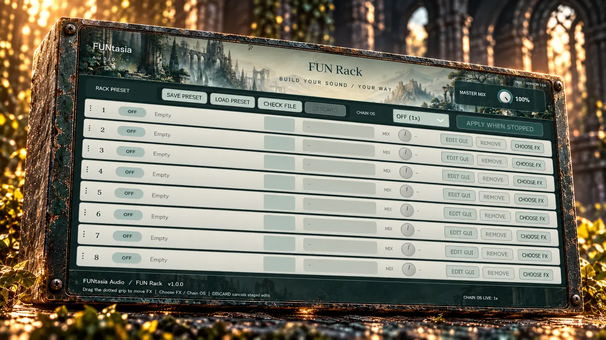

Free · VST3 FX Ecosystem · v1.0.0
FUN Rack
Build your sound. Your way.
FUN Rack is the foundation of the FUNtasia Audio ecosystem: a place to combine today's FUN plugins and the FUN plugins we will release in the future, shaping them into a new instrument of your own.
It is equally designed for third-party VST3 audio effects. Bring compatible VST3 tools into the same eight-slot serial rack, reorder them freely, and balance each effect and the whole chain independently.
8 SERIAL VST3 SLOTSPER-SLOT MIXMASTER MIXCHAIN OS 1× / 2× / 4× / 8×PRESETS
FUN Rack is a serial audio-effect host, not a synthesizer or a parallel-routing matrix. Third-party VST3 effects must be installed separately.
PDF USER MANUALS
Kaisei Opti Regular · SIL Open Font License 1.1 · OFL 1.1